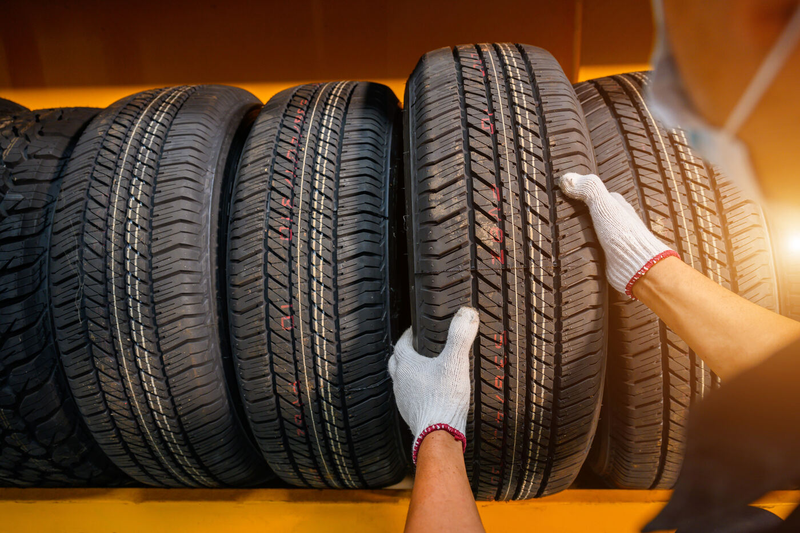

Home / Blog / RFID Tire Tags & Casing Tracking
CASING GUIDEWhat RFID tire tags are, the ISO 20909–20912 standards behind them, which tag types survive retreading, and how casing-level tracking feeds retreadability and salvage-rate decisions.
Published November 22, 2026 · Good Hope Retreaders

A casing program only works if you can tell one casing from another. You need to know which tire came off which truck, how many times it has been retreaded, what the inspector found and why it was rejected. When a fleet sends casings to an outside retreader, much of that history sits in someone else's system. When the fleet runs its own retread line, the history is the fleet's to capture, and how you identify each casing decides how good that data will be.
This guide explains what RFID tire tags are, which international standards govern them, how they compare with the identification already moulded into every tire, and how to decide whether RFID belongs in your in-house program.
Every tire sold in the U.S. carries a Tire Identification Number (TIN) under 49 CFR Part 574. Its first group is a plant code that identifies the manufacturer or retreader. Retreaded tires carry a three-symbol plant code assigned by NHTSA. The final group is a four-digit date code that identifies the week and year of manufacture, or of retreading for a retread. (We cover the retreader's labelling obligations in DOT Certification for an In-House Retread Line.)
The TIN describes where and when a tire was made. It isn't designed to be a serial number for one specific casing, and it can't tell you that casing's service history. That's why serious casing programs add their own identifier, such as a barcode or an RFID tag, and log each casing against it (see Casing Ownership).
An RFID tire tag is a small passive chip and antenna, with no battery, that a handheld or fixed reader can read by radio. Because the reader doesn't need line of sight, a technician can identify a tire on a rack, on a vehicle or in a stack without finding and cleaning a printed label.
The tire industry has standardized how this works through a family of ISO standards:
For a fleet, standardization means a tag read by one compliant reader should carry a unique ID in a predictable format, whoever made the tire. That's what makes a fleet-wide casing database practical.
This is the question that matters most for a retread program, and the answer depends on where the tag sits.
Before you commit to a tag type, check where the tag sits relative to the areas your buffing, skiving and repair steps work on, and confirm with the tag supplier that it's rated for your cure temperatures and times.
Trade press coverage of RFID in fleets describes the main benefit as tracking: linking each tire's unique ID to tread-depth and inflation readings, the vehicles it ran on, and the service providers and retread plants that handled it. Manufacturer representatives have also pointed to fewer inventory errors, because scanning replaces hand-keying long codes. For an in-house line, that history feeds directly into decisions you already make:
Industry sources have also suggested tags could eventually help with tire recall identification. For now, the practical value is tracking.
RFID isn't the only option. A durable barcode works as a casing ID if your technicians can reliably find it, read it and keep it legible. RFID's advantages are speed and no need for line of sight: you can scan a rack or a truck without handling each tire. Its costs are the readers, the software and, for casings without a factory tag, the tags and labour to fit them. A reasonable approach for a new in-house line:
Casings are the asset that makes retreading pay, and casing history is what lets you manage that asset. A fleet that runs its own line and tracks its own casings decides what to retread, when to pull tires and how to improve salvage, using its own data rather than someone else's report. That's the same independence argument we make in The Real Cost of Franchise Lock-In vs. Running Your Own Retread Line.
Good Hope supplies the equipment the casing passes through at each scan point, from inspection spreaders and buffing machines to tire builders and electric curing chambers, along with the consumables and repair tools that keep the line running. Everything is sold manufacturer-direct with local Ontario service. We don't sell RFID systems. We help you set up the line those systems track.
Tell us your expected weekly retread volume and casing sizes and we'll quote the inspection, buffing, building and curing equipment as one transparent, all-in Canadian price, with local Ontario service.
Get a retread line quote →Send us your requirements and we'll get back to you within 24 hours with pricing and lead times — no obligation.